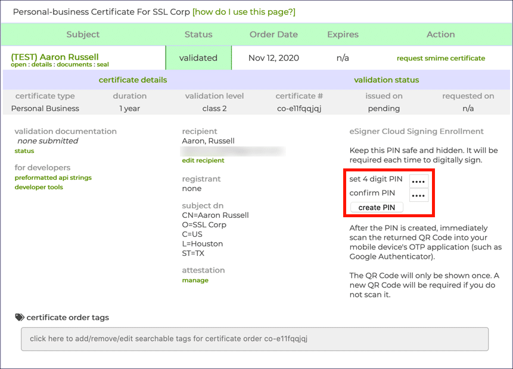
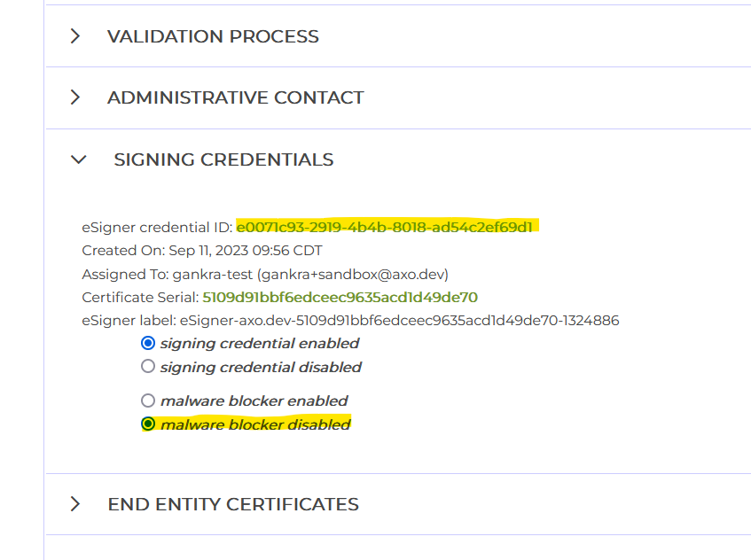
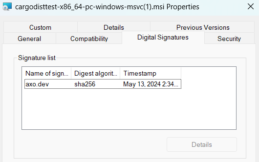

Windows Artifact Signing with SSL.com Certificates
since 0.15.0
dist can automatically codesign Windows EXEs and MSIs using SSL.com's eSigner cloud signing service.
Although there are many ways to do code signing, this process is specifically concerned with ensuring Windows SmartScreen recognizes the authenticity of the signatures and doesn't prevent your users from running the application. Otherwise, any user who downloads your application with a web browser will get a popup warning them against running it. (Alternative methods of downloading and installing, such as dist's powershell installers do not trigger SmartScreen.)
Windows code signing is done using essentially the same certificate infrastructure as HTTPS, just with stricter requirements on issuance and management of the private keys. In principle this means you can go to your favourite SSL/TLS Certificate vendor and ask for an EV Code Signing Certificate and follow the same process regardless of which vendor you picked. However as of July 2023, all the relevant kinds of code signing certificates can only be issued via hardware security modules (HSMs) like Yubikeys. This poses a significant challenge for CI/CD pipelines, because you can't just plug a USB key into GitHub CI.
Although this will hopefully improve in the future, for now this has resulted in a fragmented system where each certificate vendor has its own cloud signing service where they host the HSMs and you send them the things you want signed. As a result it's no longer possible to provide a reasonable generic Windows code signing workflow, so for now we've made ours specific to one vendor: SSL.com.
Want support for another vendor? Drop us a line or file an issue.
Quickstart
Part 1: Create an SSL.com certificate (real or sandbox)
-
Make an account and order your certificate
Go to https://ssl.com/ (or https://sandbox.ssl.com for the testing sandbox) and log into your account. Then go to "Dashboard > developer tools", and order "ESIGNER EV CODE SIGNING (360)".
If you are using a sandbox account, you may need to email support several times to have your test certificate validated and issued. The resulting certificate and signatures won't be trusted by Windows, but you can at least test things before buying a certificate.
-
Enroll in eSigner Cloud Signing
Go to "Orders > documents > certificate details": You should see a prompt to a enter and confirm a PIN to setup an OTP login.
BE SURE TO SAVE THE TOTP SECRET CODE THAT APPEARS UNDER THE QR CODE FOR YOUR OTP APP, YOUR CI WILL NEED THIS.

-
Get your credential ID
On the same page as the previous step open "signing credentials" and copy the "eSigner credential ID". The credential ID will be used in CI to identify which certificate to use.

-
(optional) Disable malware blocker
In the same "signing credentials" section as the previous step, you may want to disable the "malware blocker".
SSL.com's cloud signing provides an optional malware checking service which you may want to disable in your account settings. The purpose of this feature is to mitigate the risk of your infrastructure being compromised and being used to sign malware, by essentially giving SSL.com permission to refuse to sign suspicious-looking binaries.
When publishing from environments like GitHub CI, there isn't much room for such a compromise to occur that wouldn't just compromise your SSL.com account anyway, so the benefits are unclear compared to the risk of your releases randomly failing due to a false positive.
-
Add GitHub Secrets to your repository
SSLDOTCOM_USERNAME: the username of your ssl.com accountSSLDOTCOM_PASSWORD: the password to your ssl.com accountSSLDOTCOM_TOTP_SECRET: this is the totp "secret code" from Step 2SSLDOTCOM_CREDENTIAL_ID: this is the "credential id" from Step 3
For reference, the SSL.com documentation for their official GitHub Action uses the names: ES_USERNAME, ES_PASSWORD, ES_TOTP_SECRET, and CREDENTIAL_ID for these values. The “ES” stands for “esign”. We renamed these variables to make them more specific and clear.
Part 2: Enable SSL.com signing with dist
-
Configure dist to codesign
Add the following to your
Cargo.tomlordist.toml:[workspace.metadata.dist] ssldotcom-windows-sign = "prod" # or "test" if you are using a sandbox account -
Run
dist initon your projectYou've already fully configured the feature, we're just ensuring your config changes are applied and checked.
-
You're done!
The simplest way to test your signing out is to cut a (pre)release, but you can also build the artifacts in a pull request.
If everything worked, all windows binaries and MSIs should now be signed with your certificate. If you used real certificates, you can test this by downloading the windows .zip for your app with your browser and double-clicking it in your file explorer. If you get no message that "Windows protected your PC", it worked!
If you used a sandbox (test) certificate, SmartScreen won't acknowledge the code signing at all, but you should be able to see a "Digital Signatures" entry in the properties of the file:
